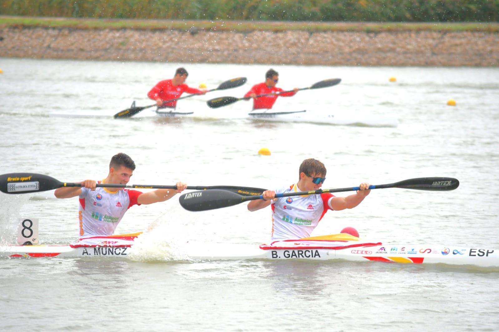
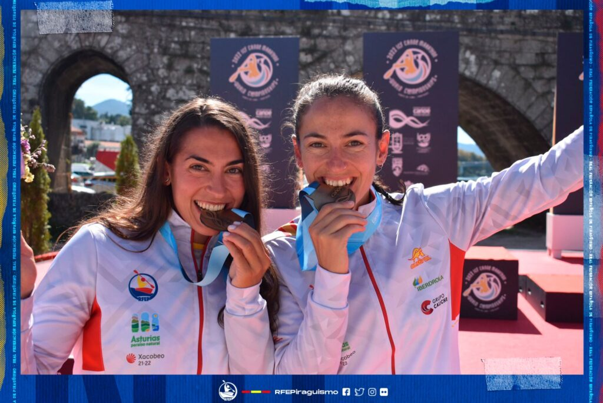
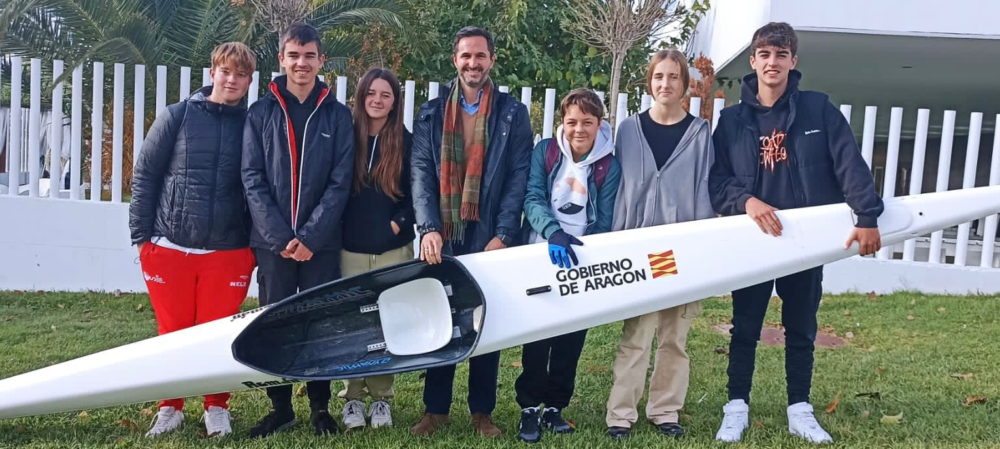
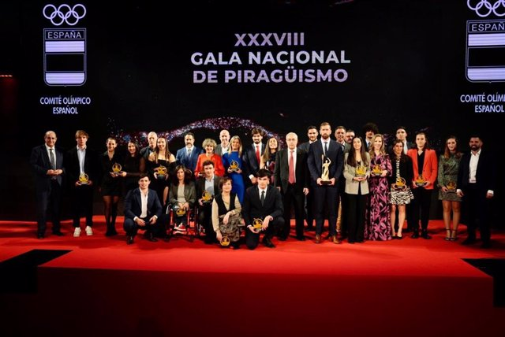

nuevo video
Bruno garcia nos enseña como es un dia en el equipo nacional de piraguismo

Un interesante y divertido video que nos enseña que realmente los del equipo nacional tambien tienen una vida normal fuera del deporte. Tambien nos hable de sus dietas y formas de entrenar ademas de su aun breve trayectoria en este deporte
Saber mas...
mudial de maraton
el equipo español se lleva 15 medallas

el conjunto español consiguio llevarse 15 medallas y con eso el campeonato mundial de maraton de aguas tranquilas en ponte de lima, portugal
Saber mas...
rfep invierte en los jovenes
nuevos programas para los jovenes estudiantes de los centros de tecnificacion

La RFEP quiere apoyar programas autonómicos como esté que integran la parte de tecnificación deportiva con la formativa. Las Aulas de Tecnificación Deportiva es un programa del Gobierno de Aragón que busca la formación integral de los deportistas desde la base, encaminándolos hacia el alto rendimiento desde la etapa de la educación secundaria hasta la finalización del bachillerato.
Saber mas...
La Gala Nacional de Piragüismo
La Real Federación Española de Piragüismo organizó con un gran éxito la XXXVIII Gala Nacional que encumbró a los mejores palistas de nuestro deporte

La ceremonia, que se pudo seguir en directo a través del streaming de la RFEP TV en su canal de YouTube, dio comienzo rememorando el histórico año de nuestro deporte donde los éxitos en el sprint olímpico, en maratón, en kayak polo o en barco dragón, supusieron un nuevo impulso para que el piragüismo español se sitúe entre los mejores del mundo
Saber mas...

 inicia sesión
inicia sesión registrate
registrate